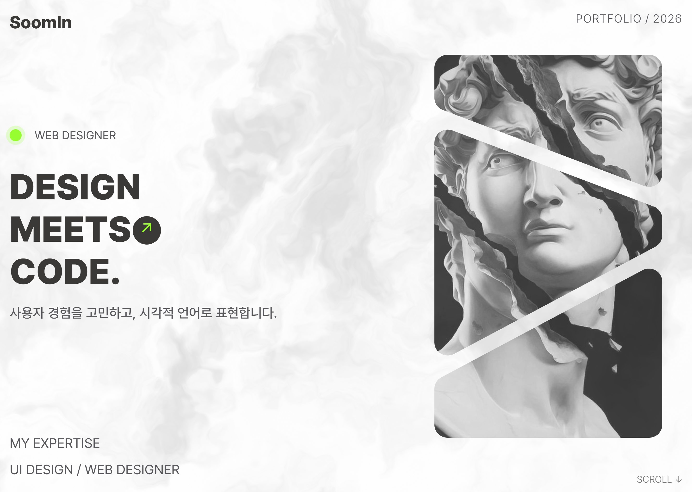
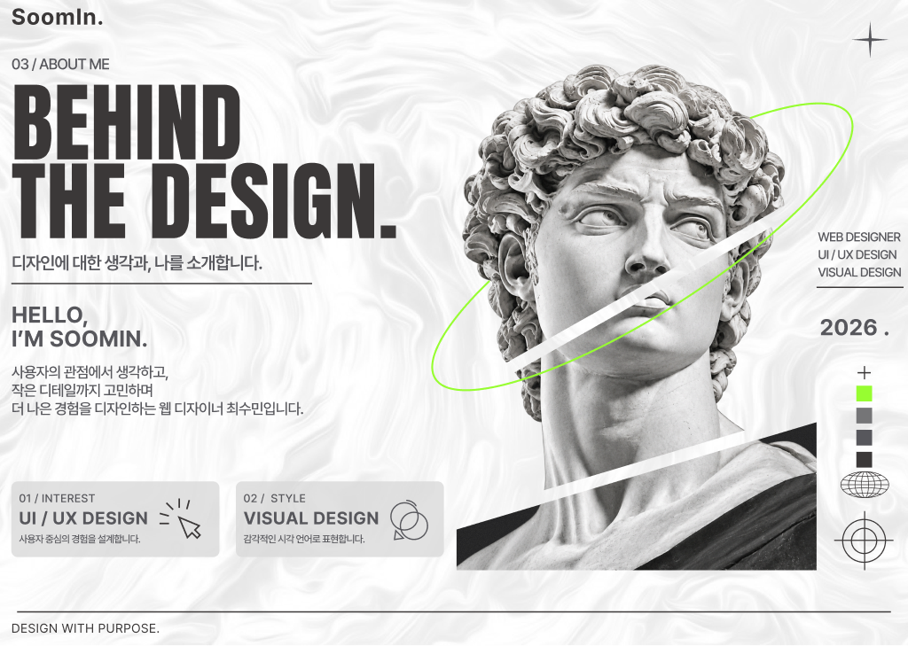
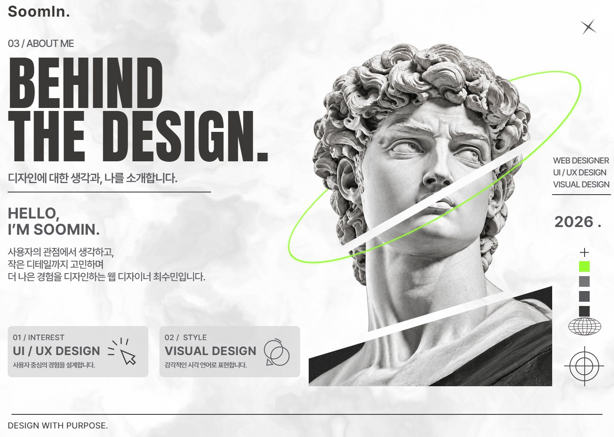
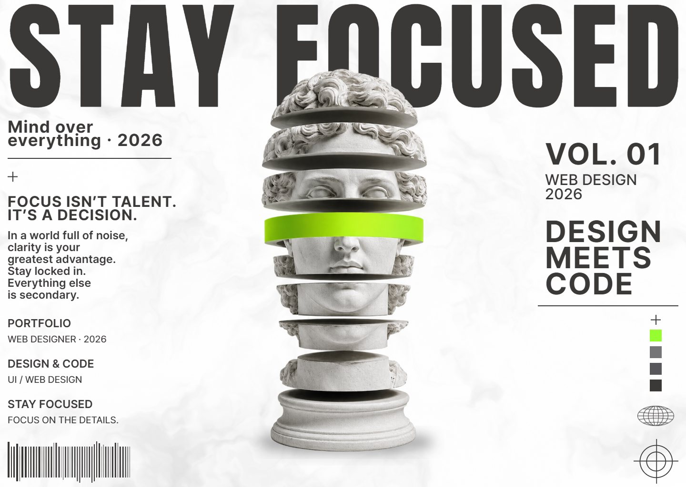
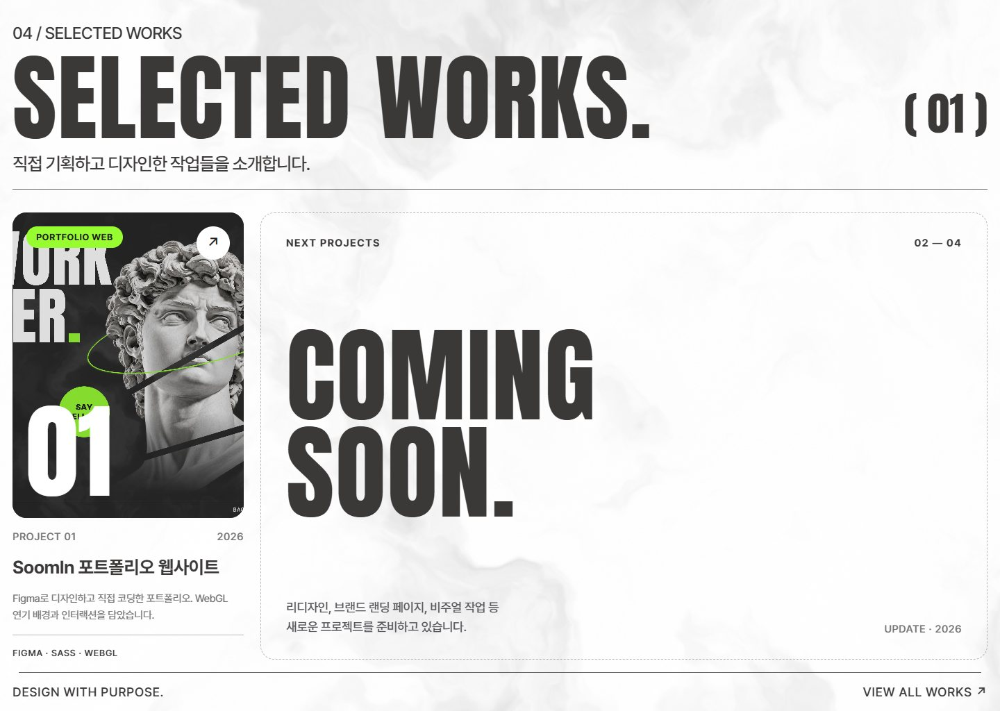
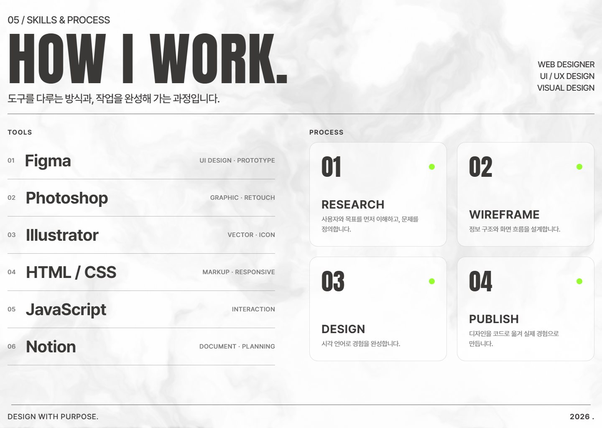
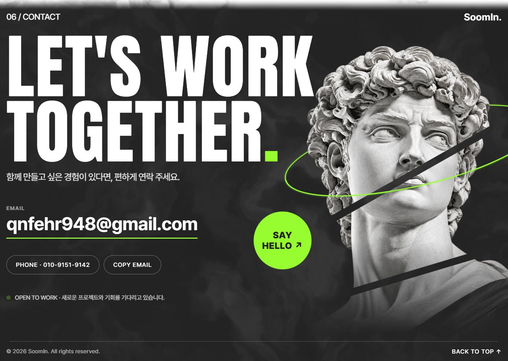

PROJECT 01 — PORTFOLIO WEB
SOOMLN
PORTFOLIO.
디자인을 이해하고, 코드로 경험을 완성합니다.
그 문장을 보여 주기 위해 포트폴리오 사이트 자체를 첫 번째 프로젝트로 만들었습니다.

01 / OVERVIEW
OVERVIEW.
고전 조각상과 대리석, 그리고 라임 한 방울.
포트폴리오의 첫인상은 ‘디자인과 코드가 만나는 곳’이어야 했습니다. 고전 조각상을 잘라 다시 붙인 콜라주로 해체와 재구성을, 흐르는 연기 배경으로 살아 움직이는 화면을 표현했습니다. 차분한 무채색 위에 형광 라임 하나만 포인트로 써서 시선이 머물 곳을 분명하게 했습니다.
- 6개 섹션으로 이어지는 원페이지 구성
- 1440px 시안 비율을 그대로 유지하는 데스크톱 웹
- 커서에 반응해 흩어지는 WebGL 연기 배경
02 / DESIGN SYSTEM
DESIGN.
COLOR
- BLACK#3B3838 · 제목·본문
- GRAY#57575C · 보조 텍스트
- LIGHT GRAY#757577 · 캡션
- LIME#97FD31 · 포인트
- DARK#222223 · 마무리 섹션
- WHITE#FFFFFF · 배경
TYPOGRAPHY
Anton
DISPLAY — 섹션 제목, 숫자
Pretendard
TEXT — 본문, 라벨 (Light ~ Black)
FIGMA → WEB


03 / SECTIONS
SCENES.
매거진을 넘기듯 한 장면씩 이어지도록 여섯 개의 섹션을 1440 × 1024 프레임으로 설계했습니다.
01 HERO 
02 FOCUS 03 ABOUT 
04 WORKS 
05 SKILLS 
06 CONTACT
04 / DEVELOPMENT
BUILD.
- 01
구조
시맨틱 HTML로 6개 섹션을 마크업하고, 반복되는 카드와 버튼을 컴포넌트 단위로 나눴습니다.
- 02
스타일
Sass를 역할별 파일로 분리하고, 시안의 1px을 화면 비율로 바꾸는 함수로 1440px 비율을 유지했습니다.
- 03
인터랙션
커스텀 커서, 스크롤 등장, 마우스 패럴랙스, 마그네틱 버튼으로 손에 반응하는 화면을 만들었습니다.
- 04
배경
WebGL 셰이더로 연기를 실시간 생성하고, 커서 속도를 기록해 지나간 자리의 연기가 흩어지게 했습니다.
SCSS — 시안 비율을 지키는 단위 함수
// 1 design px = viewport width / 1440
@function u($px) {
@return calc(#{$px} * var(--u));
}
// Figma x, y, w, h copied as-is (_hero.scss)
.hero__visual {
@include pos(779, 94, 651, 837);
opacity: 0.76;
}지금 이 페이지의 배경도 같은 연기 셰이더입니다. 커서를 움직여 보세요.
05 / PROBLEM → SOLUTION
FIXES.
정적인 시안에서는 보이지 않다가, 브라우저에서 움직이기 시작하자 드러난 문제들입니다.
-
PROBLEM 01
섹션 사이의 경계선
섹션마다 배경 무늬를 새로 그려서, 넘어가는 지점에 이음새가 보였습니다.
페이지 전체를 하나의 연속된 무늬로 계산하도록 바꿔 경계를 없앴습니다.
-
PROBLEM 02
확대하면 깨지는 배경
원본 대리석 이미지가 564px로 작아 큰 화면에서 픽셀이 드러났습니다.
이미지 대신 셰이더로 무늬를 직접 생성해 해상도 제한 자체를 없앴습니다.
-
PROBLEM 03
따로 노는 조각상과 도형
마우스 패럴랙스 때 조각상만 움직여 아래 도형·그림자와 어긋났습니다.
함께 움직여야 하는 요소를 하나의 묶음으로 만들어 같은 값으로 이동시켰습니다.
-
PROBLEM 04
끊겨 보이는 궤도 링
시안의 링이 열린 호라서 머리 위쪽이 잘려 보였습니다.
완전한 타원을 앞·뒤 절반으로 나눠, 링이 머리를 감싸 도는 입체감을 만들었습니다.
WHAT I
LEARNED.
시안을 그대로 옮기는 것보다, 브라우저에서 실제로 움직였을 때 어떻게 보이는지가 더 중요하다는 것을 배웠습니다. 이음새와 해상도, 움직임처럼 정지된 화면에서는 보이지 않던 문제를 하나씩 해결하며 ‘디자인을 코드로 완성한다’는 말의 의미를 체감했습니다.
© 2026 Soomln. All rights reserved.
BACK TO TOP ↑